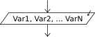

Lectura

La instrucción Leer permite ingresar información desde el ambiente.
Leer <variable1> , <variable2> , ... ,
<variableN> ;
Esta instrucción toma N valores desde el ambiente (en este caso el teclado) y los asigna a las N variables mencionadas. Pueden incluirse una o más variables, por lo tanto el comando leerá uno o más valores.
Si una variable donde se debe guardar el valor leído no existe, se crea durante la lectura. Si la variable existe se pierde su valor anterior ya que tomará el valor nuevo, razón por la cual se dice que la lectura es "destructiva" (destruye el valor que tenía previamente la variable).
Si se utiliza sintaxis flexible se permite opcionalmente separar las variables a leer simplemente con espacios en lugar de comas. Esto se configura en el cuadro de Opciones del Pseudocódigo.
El ejemplo Suma muestra un programa muy simple que lee dos números y calcula y muestra la suma de los mismos.